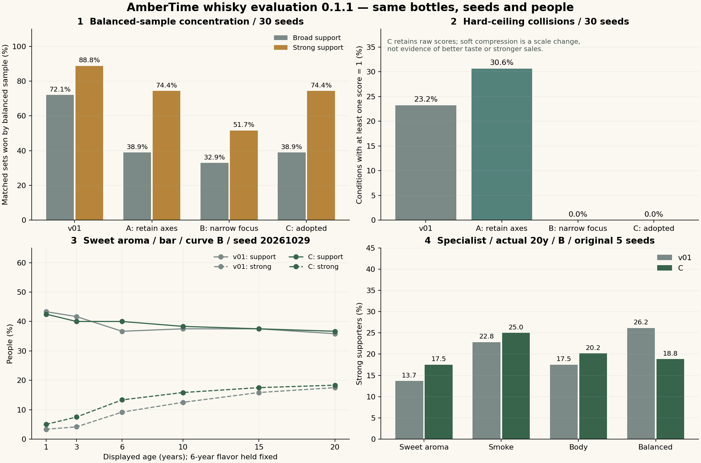

評価 Lab 0.1.1
条件をひとつ変える
数式・比較案・詳細値・ログ
採用案Cは客が重視する風味の重みを増やし、他の風味の重みは下げません。客層・熟成曲線・支持の閾値はv01と同じです。上限付近を連続的に圧縮し、圧縮前の値も保存します。
印象は好意・否定・中立に分けます。支持人数は売上や口コミではありません。この画面だけでゲームの面白さは判断しません。
改善前後の分析グラフ

採用案Cは客が重視する風味の重みを増やし、他の風味の重みは下げません。客層・熟成曲線・支持の閾値はv01と同じです。上限付近を連続的に圧縮し、圧縮前の値も保存します。
印象は好意・否定・中立に分けます。支持人数は売上や口コミではありません。この画面だけでゲームの面白さは判断しません。
